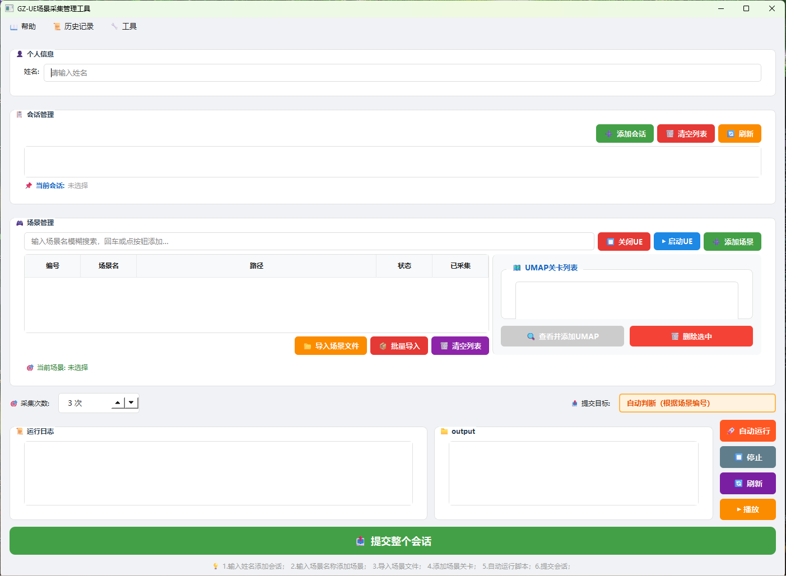

工具主界面图

一、工具概述
GZ-UE 场景采集管理工具是一款专为虚幻引擎（Unreal Engine）场景数据采集设计的桌面管理软件，运行于 Windows 系统，提供从场景管理、自动化采集、结果归档到历史追踪的全流程支持。
1.1 主要功能
- 会话与场景的统一管理
- 支持搜索添加场景，绑定对应 UMAP 关卡文件
- 自动启动 UE、执行采集脚本（generate_camera_poses.py）、生成相机轨迹 CSV
- 采集结果一键提交，文件自动归档到对应管理目录
- 历史记录查看，支持按用户 / 场景过滤与检索
- 工具菜单提供 UE 缓存清理等辅助功能
1.2 整体工作流程
二、界面说明
主界面从上至下分为以下几个区域：
2.1 菜单栏
| 菜单项 | 说明 |
|---|---|
| 📖 帮助 → 查看说明书 | 打开本工具的使用说明书文件（已提前放置 ue工具使用说明书.txt路径） |
| 📜 历史记录 → 查看采集历史 | 打开历史记录对话框，查看所有采集提交记录 |
| 🔧 工具 → 清理UE缓存 | 清除 UnrealEngine 本地缓存，解决缓存导致的启动异常 |
2.2 个人信息区
用于填写操作者姓名。姓名会保存到本地配置，下次启动自动恢复，并将写入提交结果和历史记录中。
2.3 会话管理区
| 按钮 | 功能 |
|---|---|
| ➕ 添加会话 | 弹出对话框，输入会话名称后新建会话。每次采集任务建议新建独立会话。 |
| 🗑 清空列表 | 清空当前所有会话（需二次确认） |
| 🔄 刷新 | 重新从数据库加载会话列表 |
| 单击会话条目 | 切换当前选中会话，场景列表同步切换 |
「📌 当前会话」标签显示当前激活的会话名称。
2.4 场景管理区
左侧：场景表格
| 列名 | 说明 |
|---|---|
| 编号 | 场景文件夹名前缀数字，如 52_白宫椭圆形办公厅 → 52 |
| 场景名 | 场景文件夹名称 |
| 路径 | 场景在服务器 / 网络盘上的完整路径 |
| 状态 | 当前采集状态（未采集 / 采集中 / 完成） |
| 已采集 | 本次已成功采集的次数 |
💡 右键单击场景行可复制场景路径到剪贴板。
右侧：UMAP 关卡列表
显示当前选中场景已绑定的 UMAP 文件，双击可在文件管理器中定位打开。
| 按钮 | 功能 |
|---|---|
| 🔍 查看并添加UMAP | 打开 UMAP 浏览器，从场景目录中搜索并添加 .umap 文件（需先在场景表格中选中一行） |
| 🗑 删除选中 | 从列表中移除当前选中的 UMAP 条目 |
2.5 操作选项与按钮区
| 控件 | 说明 |
|---|---|
| 🎯 采集次数 | 设置每个场景的采集循环次数（1–100），默认读取设置中配置的值 |
| 📤 提交目标 | 只读显示，根据场景编号（1–50 或 51–100）自动判断归档目标目录 |
| 📂 导入场景文件 | 从磁盘手动选择场景文件夹导入 |
| 📦 批量导入 | 打开批量导入对话框，批量扫描并复制多个场景到统一目录 |
| 🗑 清空列表 | 清空场景表格中的所有行 |
| ❌ 删除选中 | 删除场景表格中当前选中的行（选中行后显示） |
2.6 运行控制区
| 按钮 | 说明 |
|---|---|
| 🚀 自动运行 | 启动自动采集流程，对场景列表中所有「未采集」状态的场景依次执行采集 |
| ⏹ 停止 | 发送停止信号，在当前单次采集结束后中断循环 |
| 🔄 刷新 | 刷新 output 文件夹的文件列表显示 |
| ▶ 播放 | 播放 output 目录中的图片序列（如有截图文件） |
| 📤 提交整个会话 | 将所有场景的采集结果归档提交到管理目录 |
2.7 日志与 output 区
「📜 运行日志」实时显示采集过程中每一步的操作信息，包括 UE 启动、脚本执行、CSV 移动、错误提示等，方便排查问题。
「📁 output」栏显示 output 目录中当前已生成的文件列表（CSV 轨迹文件等），提交后自动清空。
三、使用步骤详解
3.1 启动前准备
请确认以下环境已就绪：
- Unreal Engine 5.6 已安装，默认路径：
C:\Program Files\Epic Games\UE_5.6\Engine\Binaries\Win64\UnrealEditor.exe - spear-env 虚拟环境已配置，Python 路径：
C:\ProgramData\anaconda3\envs\spear-env\python.exe - SpearSim 项目存在：
C:\spear\cpp\unreal_projects\SpearSim\SpearSim.uproject - 采集脚本存在：
C:\spear\examples\render_image\generate_camera_poses.py - 网络盘
Z:\已正常挂载，场景文件夹和管理目录可访问
3.2 填写个人信息
3.3 新建采集会话
2026-06-16采集）3.4 添加场景
方式一：搜索添加（推荐）
Z:\场景信息.csv，格式为：第1列=场景名，第2列=场景路径，第3列=项目路径，编码 GBK。方式二：手动导入
方式三：批量导入
3.5 绑定 UMAP 关卡文件
场景名.txt 文件，请确保绑定正确的关卡文件。3.6 设置采集次数
在「🎯 采集次数」数字框中调整本次对每个场景的采集循环次数（默认 3 次）。可在「设置」对话框中修改默认值。
3.7 执行自动采集
① 先在 UE 内点击「开始录制」 → ② 再回到本工具点击弹窗的「是」
顺序颠倒将导致本次采集数据无效！
- 启动 UE（打开 SpearSim 项目），等待约 6 秒加载完成
- 弹出确认对话框，提示操作步骤
- 【重要】先在 UE 中点击「开始录制」，再点弹窗「是」
- 工具调用
generate_camera_poses.py执行相机轨迹采集（最多 10 分钟） - 脚本结束后，自动将生成的 CSV 移动到 output 文件夹
- 关闭 UE，等待 3 秒后进入下一次循环
3.8 中途停止
在任意时刻点击「⏹ 停止」，工具会在当前单次采集结束后退出循环，不会强制中断正在运行的脚本或 UE 进程。
3.9 提交采集结果
- 在对应管理目录下以姓名建立用户子文件夹
- 在用户子文件夹下以场景名建立独立场景文件夹
- 在场景文件夹内创建「采集轨迹」子文件夹，将 CSV 轨迹文件放入
- 生成
{场景名}.txt（包含场景编号、路径、UMAP 路径、采集次数） - 生成
采集结果信息.csv（包含提交者、时间等完整信息） - 清空本地 output 文件夹
四、历史记录
菜单「📜 历史记录 → 查看采集历史」可打开历史记录对话框，记录每次提交的详细信息。
| 字段 | 说明 |
|---|---|
| 时间 | 提交时间（精确到秒） |
| 用户 | 提交者姓名 |
| 场景 | 提交的场景名称 |
| 场景编号 | 场景数字编号 |
| 采集次数 | 本次共采集的次数 |
| 状态 | 固定为「已提交」 |
| 采集时长 | 从会话开始到提交的总耗时 |
4.1 搜索过滤
在历史记录对话框顶部的搜索框输入关键词，可同时过滤用户名和场景名，实时显示匹配结果。
4.2 管理历史记录（需管理员密码）
- 「删除选中」：删除当前选中的单条历史记录
- 「清空所有」：一次性删除所有历史记录（不可恢复）
五、常见问题 FAQ
Q1：搜索框找不到场景怎么办？
场景列表来源于 Z:\场景信息.csv，请确认：
- 网络盘
Z:\已正确挂载且在线 - CSV 文件存在，编码为 GBK
- 场景是否存在！
Q2：UE 启动失败或找不到可执行文件？
确认 UE 5.6 已正确安装。
Q3：采集脚本超时或卡住？
采集脚本最长允许运行 10 分钟（600 秒）。若超时，请检查：
- UE 是否已正常打开并处于录制状态
- spear-env Python 环境及 pythonpath 配置是否正确
- 查看运行日志中的脚本错误输出
Q4：CSV 文件没有生成？
可能原因：
- 采集脚本未正常执行（查看日志中的
[脚本输出]信息） - 脚本路径不存在（默认：
C:\spear\examples\render_image\generate_camera_poses.py） - 弹窗操作顺序有误——应先点 UE 内录制，再点弹窗「是」
Q5：提交后文件没有出现在管理目录？
请检查：
- 网络盘
Z:\是否在提交时在线 - 管理目录eg：（
1-50_管理者/51-100_管理者1）是否存在 - 运行日志中是否有错误提示（如权限不足、路径不存在）
Q6：UE 缓存导致打开异常？
可在菜单「🔧 工具 → 清理UE缓存」中一键清理缓存目录：
C:\Users\Administrator\AppData\Local\UnrealEngine
六、文件与目录说明
6.1 本地文件
| 文件 / 目录 | 说明 |
|---|---|
manager.db | SQLite 数据库，存储场景、会话、采集记录 |
config.json | 本地配置（姓名、UE 路径、默认采集次数等） |
history.json | 采集历史记录文件（JSON 格式） |
output/ | 采集脚本生成的 CSV 轨迹文件临时存放目录，提交后自动清空 |
6.2 网络盘目录（Z:\）
| 目录 | 说明 |
|---|---|
Z:\1-50_场景文件 | 编号 1–50 的场景文件夹 |
Z:\51-100_场景文件2 | 编号 51–100 的场景文件夹 |
Z:\1-50_管理者 | 编号 1–50 场景的提交归档目录 |
Z:\51-100_管理者1 | 编号 51–100 场景的提交归档目录 |
Z:\场景信息.csv | 场景名称与路径的索引文件（GBK 编码） |
Z:\output | output 输出文件目录 |
6.3 提交后归档目录结构
提交成功后，每个场景会在对应管理目录下生成如下结构：
├── 场景名.txt （场景基本信息 + UMAP 路径）
├── 采集结果信息.csv （提交者、时间、采集次数）
└── 采集轨迹 /
├── 场景名_轨迹_1.csv
├── 场景名_轨迹_2.csv
└── 场景名_轨迹_N.csv
七、注意事项与最佳实践
GZ-UE 场景采集管理工具 · 用户手册